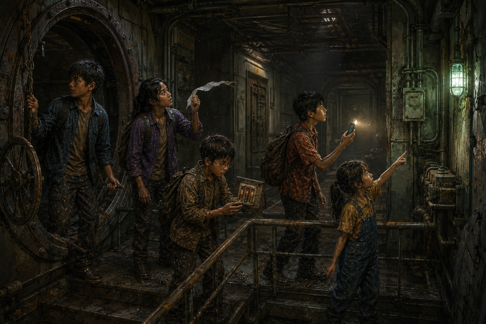

ห้องที่ยังมีไฟ
เวลาอ่านประมาณ 15 นาที · Electricity / Battery / Mystery
ไฟสีเขียวหลังกำแพงกะพริบห้าครั้ง แล้วกลับมาสว่างนิ่ง
ไม่มีใครก้าวผ่านประตูทันที ลมที่ไหลออกมาจากสถานีเบาลงแล้ว แต่กลิ่นฝุ่นกับโลหะเก่ายังลอยอยู่
นนท์ผูกเชือกกับวงล้อด้านนอกให้ประตูไม่ปิด มีนาใช้กระดาษแผ่นบางถือใกล้ช่องเพื่อดูทิศทางลม ปั้นบันทึกเวลา ส่วนต้นกล้าส่องไฟโทรศัพท์ลงบันได
“ยี่สิบสามขั้น” ปั้นนับ
ฟ้าถาม “ถ้าไฟข้างล่างดับตอนเราอยู่กลางทางล่ะ?”
คำถามนั้นทำให้ทุกคนเปิดโหมดประหยัดพลังงาน เหลือโทรศัพท์เพียงเครื่องเดียวที่เปิดไฟฉาย และผูกเศษผ้าสีสว่างไว้กับราวบันไดเป็นทางกลับ
พวกเขาลงไปพร้อมกัน บันไดจบที่ห้องโถงเล็ก ผนังคอนกรีตแห้งกว่าที่คิด ท่อโลหะวิ่งไปตามเพดาน และมีประตูภายในสามบานที่ยังปิดสนิท
สิ่งเดียวที่ทำงานคือโคมไฟฉุกเฉินสีเขียว

สถานีดูเหมือนถูกทิ้งมานาน แต่ไฟฉุกเฉินกลับยังทำงาน
ต้นกล้าเงยหน้ามอง “แบตเตอรี่อะไรอยู่ได้ยี่สิบปี?”
“อาจไม่ได้อยู่ด้วยแบตเตอรี่ก้อนเดิม” นนท์ตอบ “หรืออาจมีแหล่งพลังงานอื่นคอยชาร์จ”
ปั้นพบกล่องสีเทาใต้โคม มีหน้าปัดเข็มและสัญลักษณ์แบตเตอรี่ เข็มชี้เกือบหมด แต่ทุกสิบเอ็ดวินาทีจะเด้งขึ้นเล็กน้อย
จังหวะเดียวกับแรงสั่นที่พาพวกเขามาที่นี่
มีนาสังเกตสายไฟสองชุด ชุดหนึ่งหุ้มฉนวนเก่าจนแตกร้าว อีกชุดดูใหม่กว่าและแทบไม่มีฝุ่น
“ถ้าสถานีร้างจริง ทำไมสายเส้นนี้สะอาดกว่า?”
ต้นกล้ายื่นมือ นนท์รีบห้าม “เราไม่รู้แรงดัน ห้ามแตะสายหรือเปิดกล่อง”
ทันใดนั้นไฟฉุกเฉินหรี่ลง โทรศัพท์ของต้นกล้าเหลือแบตเตอรี่สิบสองเปอร์เซ็นต์ และด้านนอกเริ่มมืด
🧠 จุดให้คิดประจำตอน
ทีมต้องเลือกว่าจะใช้พลังงานที่เหลืออย่างไร ข้อใดปลอดภัยที่สุด?
A. เปิดไฟฉายโทรศัพท์ทุกเครื่องให้สว่างที่สุด
B. ต่อโทรศัพท์เข้ากับสายไฟเก่าของสถานีเพื่อชาร์จ
C. ใช้ไฟทีละเครื่อง เก็บเครื่องอื่นเป็นพลังงานสำรอง และไม่แตะระบบไฟที่ไม่รู้จัก
ลองเลือกก่อนอ่านต่อ
ทุกคนเลือก C นนท์กำหนดให้เครื่องหนึ่งใช้ส่องทาง อีกเครื่องเก็บสำหรับโทรฉุกเฉิน และที่เหลือปิดสนิท
ปั้นใช้หน้าปัดโดยไม่เปิดกล่อง เขาพบว่าเมื่อโคมสว่าง เข็มแบตเตอรี่ลดลงช้า ๆ แต่เมื่อพื้นสั่น เข็มกลับเพิ่มขึ้น
“มันถูกชาร์จเป็นช่วง ๆ” เขาสรุป
ฟ้าชี้ท่อเส้นหนึ่งซึ่งสั่นตามจังหวะ “ไฟอาจมาจากเสียงใต้ดินหรือเปล่า?”
นนท์อธิบายว่าเครื่องกำเนิดไฟฟ้าสามารถเปลี่ยนพลังงานการเคลื่อนไหวเป็นไฟฟ้าได้ แต่ยังเร็วเกินไปจะสรุปว่าเครื่องจักรนั้นคืออะไร
พวกเขาสำรวจเฉพาะห้องโถง ไม่เปิดประตูด้านใน ประตูบานซ้ายมีหยดน้ำเกาะ บานกลางอุ่นเล็กน้อย ส่วนบานขวาเย็นและมีเสียงพัดลมเบามาก
มีนาเลือกอยู่ใกล้บานขวาเพราะอากาศถ่ายเท แต่ไม่ชิดประตู ทุกคนเตรียมพร้อมกลับออกทันทีหากไฟดับหรืออากาศเปลี่ยน
แล้วโคมสีเขียวก็ดับลง
ต้นกล้าเปิดไฟฉายเพียงเครื่องเดียวตามแผน ความมืดถอยไปเป็นวงเล็ก ๆ
กึก... ครืนนนน...
พื้นสั่น เข็มแบตเตอรี่เด้งขึ้น โคมฉุกเฉินติดอีกครั้ง
พร้อมกันนั้น บนผนังฝั่งตรงข้ามมีไฟเล็ก ๆ เรียงห้าดวงสว่างขึ้นทีละดวง
ดวงที่หนึ่ง สอง สาม สี่ และห้า
ใต้ไฟเหล่านั้นมีจอสีดำซึ่งก่อนหน้านี้ดูเหมือนกระจก
เส้นสีขาวเส้นหนึ่งปรากฏกลางจอ เหมือนเครื่องกำลังตื่นจากการหลับอันยาวนาน
ปั้นมองนาฬิกา “ระบบไม่ได้เปิดเองตอนเราเข้ามา”
“แล้วมันรออะไร?” ฟ้าถาม
จากหลังประตูกลาง มีเสียงรีเลย์ทำงานต่อกันเป็นทอด ๆ
แกร๊ก... แกร๊ก... แกร๊ก...
จอสีดำสว่างขึ้น แต่ยังไม่มีข้อความ
มีเพียงเคอร์เซอร์กะพริบ ราวกับกำลังเตรียมพูดกับพวกเขา
🔬 วิทยาศาสตร์ในตอนนี้
แบตเตอรี่เก็บพลังงานไว้ได้จำกัด ส่วนเครื่องกำเนิดไฟฟ้าเปลี่ยนพลังงานการเคลื่อนไหวเป็นพลังงานไฟฟ้า ระบบไฟเก่าที่ไม่ทราบแรงดันหรือสภาพฉนวนอาจอันตราย จึงไม่ควรสัมผัสหรือต่ออุปกรณ์เอง